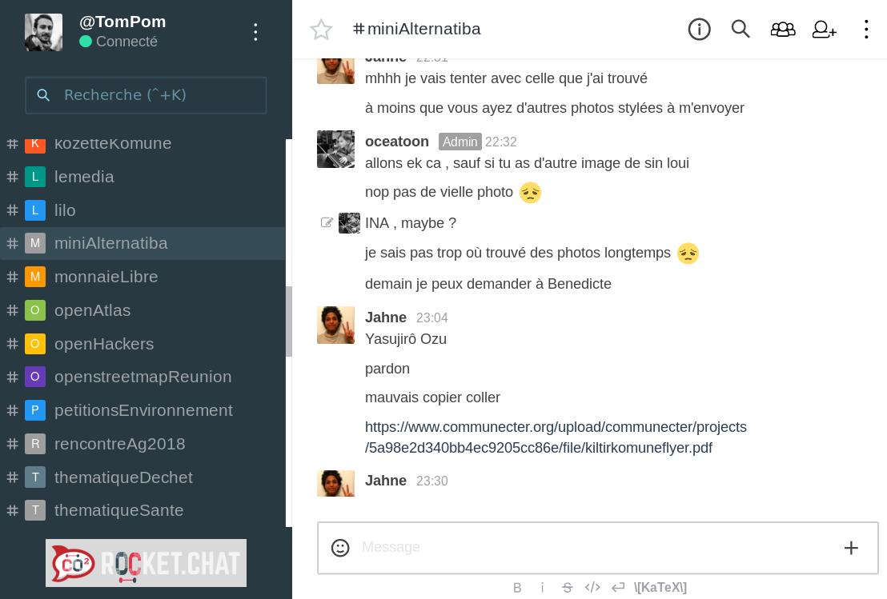
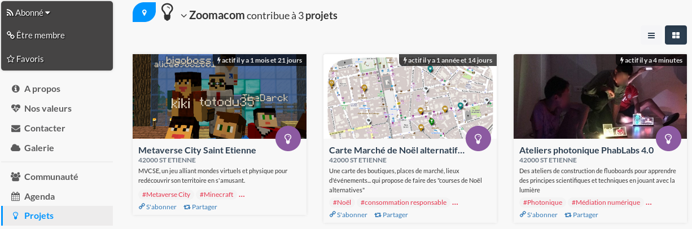

Communecter
Ce réseau social libre a été conçu pour mettre en réseau les acteurs de nos territoires. Ce diaporama vous permettra de comprendre en quoi COmmunecter peut vous être utile et ce que vous pouvez faire avec.
Naviguez grâce aux fléches du clavier. Positionnez vous sur votre profil puis descendez pour découvrir la présentation.Quel que soit l'utilisateur que vous êtes, COmmunecter est (et restera)
Accessible gratuitement
Sans publicité
Open source et open data
Je suis un citoyen
Je suis une association
Face aux défis sociaux, environnementaux, culturels, économiques et politiques de notre époque, les associations participent à la construction d’un avenir plus solidaire et plus juste. COmmunecter se met au service de ces acteurs de terrain en facilitant l'échange, la mutualisation et l'entraide.
Partie 1 : Présentation
COmmunecter met en réseau les acteurs et actions locales
Citoyen
Association
Entreprise
Groupe
Service public
Projet
Évènement
Point d'intérêt
Annonce
Local
Que ce soit une publication, une petite annonce ou un évènement, tout ce qui se trouve dans COmmunecter peut être associé à un territoire (ville, département, région ou pays).
Applications
Moteur de recherche : acteurs et actions locales
Actualité : publications localisées
Agenda : calendrier commun des actions locales
Annonces : partage de matériels et échange de services
Recherche
En plus du classique mot-clé, le moteur de recherche de COmmunecter dispose de nombreux filtres : type d'élément (citoyen, entreprise, ...), localisation et thématique.
Messagerie instantanée
Nous avons intégré ce chat pour vous aider à réduire le nombre de mail, et vous permettre de discuter par groupe de travail. Retrouvez vos discussions directement sur la fiche de votre association, sur chat.communecter.org et l'application mobile.
Partie 2 : communecter son association
La première chose que nous vous invitons à faire est de référencer votre association. Ça ne prends que quelques secondes : allez-y !

Vous pouvez inviter par mail les membres les plus actif de votre communauté.

Utilisez la messagerie instantannée pour discuter entre vous.

Publiez un message. Un simple "Bonjour" avec un lien vers votre site est un bon début. Plus tard cet espace permettra de partager votre actualité.

Ajoutez vos évènements, comme la prochaine rencontre entre bénévoles ou l'évènement auquel vous allez participer.
Partagez vos projets et lancez un appel à bénévole !
Lancez un premier vote sur l'usage de COmmunecter au sein de votre organisation.

Répartissez-vous les tâches

Affichez vos valeurs

L'usage de COmmunecter devient optimal quand d'autres acteurs locaux l'utilise. Rejoignez les pixels actifs en tant qu'ambassadeur et nous vous aiderons à développer l'usage de COmmunecter dans votre commune.